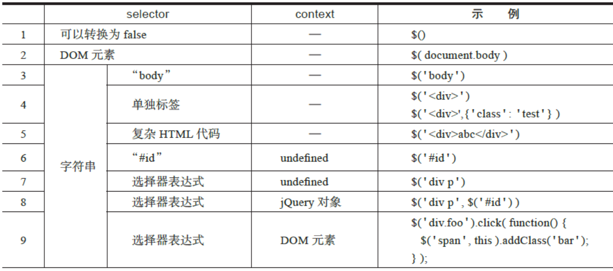
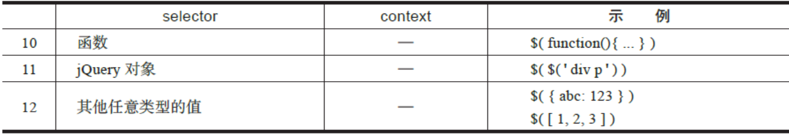
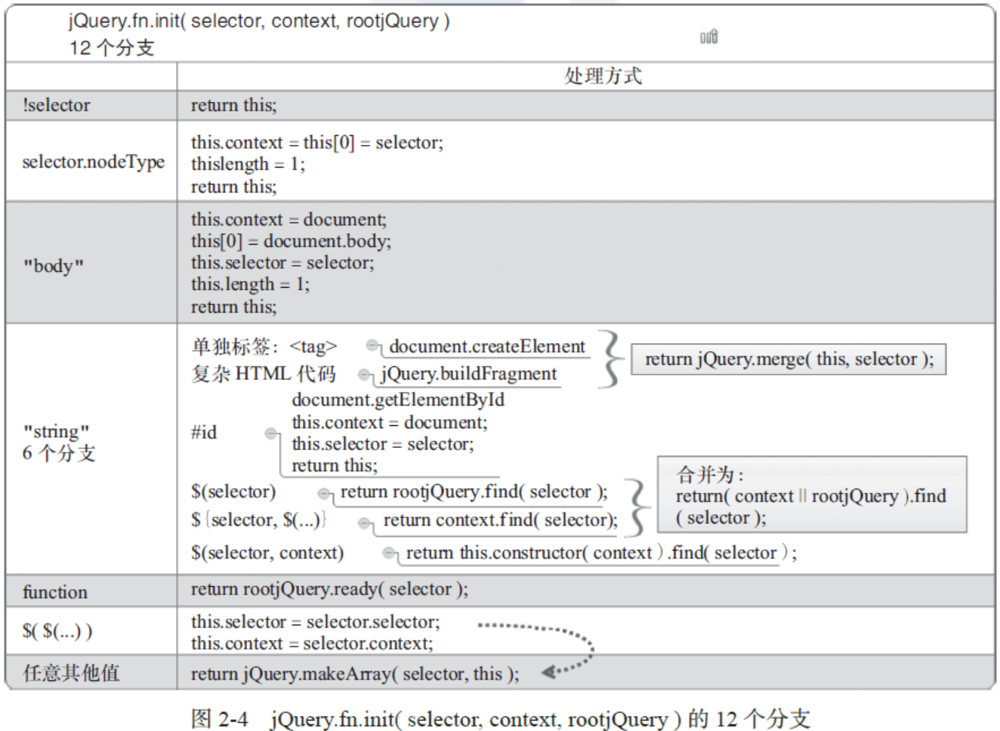

jQuery源码分析
总体架构
自调用匿名函数
为什么要为自调用匿名函数设置参数window，并传入window 对象？
通过传入window 对象，可以使window 对象变为局部变量（即把函数参数作为局部
变量使用），这样当在jQuery 代码块中访问window 对象时，不需要将作用域链回退到顶
层作用域，从而可以更快地访问window 对象，这是原因之一；另外，将window 对象作
为参数传入，可以在压缩代码时进行优化，在压缩文件jquery-1.7.1.min.js 中可以看到下
面的代码：
1 | (function(a,b){ ... })(window); |
注意到自调用匿名函数最后的分号（;）了吗？
通常在JavaScript 中，如果语句分别放置在不同的行中，则分号（;）是可选的，但是对
于自调用匿名函数来说，在之前或之后省略分号都可能会引起语法错误。例如，执行下面的
两个例子，就会抛出异常。
例1 在下面的代码中，如果自调用匿名函数的前一行末尾没有加分号，则自调用匿名
函数的第一对括号会被当作是函数调用。1
2
3var n = 1
( function(){} )()
// TypeError: number is not a function
例2 在下面的代码中，如果未在第一个自调用匿名函数的末尾加分号，则下一行自调
用匿名函数的第一对括号会被当作是函数调用。1
2
3( function(){} )()
( function(){} )()
// TypeError: undefined is not a function
所以，在使用自调用匿名函数时，最好不要省略自调用匿名函数之前和之后的分号。
构造jQuery对象
构造函数jQuery()
jQuery( selector [, context] )
如果传入一个字符串参数，jQuery 会检查这个字符串是选择器表达式还是HTML 代
码。如果是选择器表达式，则遍历文档，查找与之匹配的DOM 元素，并创建一个包含了
这些DOM 元素引用的jQuery 对象；如果没有元素与之匹配，则创建一个空jQuery 对象，
其中不包含任何元素，其属性length 等于0。字符串参数是HTML 代码的情况会在下一小
节介绍。
默认情况下，对匹配元素的查找将从根元素document 对象开始，即查找范围是整个文
档树，不过也可以传入第二个参数context 来限定查找范围（本书中把参数context 称为“选
择器的上下文”，或简称“上下文”）。例如，在一个事件监听函数中，可以像下面这样限制
查找范围：1
2
3$('div.foo').click(function() {
$('span', this).addClass('bar'); // 限定查找范围
});
在这个例子中，对选择器表达式“ span”的查找被限制在了this 的范围内，即只有被点
击元素内的span 元素才会被添加类样式“bar ”。
如果选择器表达式selector 是简单的“ #id”，且没有指定上下文context，则调用浏览器
原生方法document.getElementById() 查找属性id 等于指定值的元素；如果是比“ #id”复杂
的选择器表达式或指定了上下文，则通过jQuery 方法.find() 查找，因此$(‘span’, this) 等价
于$(this).find(‘span’)。
至于方法.find()，会调用CSS 选择器引擎Sizzle 实现
jQuery( html [, ownerDocument] )、jQuery( html, props )
如果传入的字符串参数看起来像一段HTML 代码（例如，字符串中含有
jQuery 则尝试用这段HTML 代码创建新的DOM 元素，并创建一个包含了这些DOM 元素引
用的jQuery 对象。例如，下面的代码将把HTML 代码转换成DOM 元素并插入body 节点的
末尾：1
$('<p id="test">My <em>new</em> text</p>').appendTo('body');
如果HTML 代码是一个单独标签，例如，$(‘‘) 或$(‘‘)，jQuery 会使
用浏览器原生方法document.createElement() 创建DOM 元素。如果是比单独标签更复杂的
HTML 片段，例如上面例子中的$(‘
Mynewtext
‘)，则利用浏览器的innerHTML 机制创建DOM 元素，这个过程由方法jQuery.buildFragment() 和方法
jQuery.clean() 实现。
第二个参数ownerDocument 用于指定创建新DOM 元素的文档对象，如果不传入，则默
认为当前文档对象。
如果HTML 代码是一个单独标签，那么第二个参数还可以是props，props 是一个包含了
属性、事件的普通对象；在调用document.createElement() 创建DOM 元素后，参数props 会被传给jQuery 方法.attr()，然后由.attr() 负责把参数props 中的属性、事件设置到新创建的
DOM 元素上。
参数props 的属性可以是任意的事件类型（如“ click”），此时属性值应该是事件监听
函数，它将被绑定到新创建的DOM 元素上；参数props 可以含有以下特殊属性：val、css、
html、text、data、width、height、offset，相应的jQuery 方法：.val()、.css()、.html()、.text()、.
data()、.width()、.height()、.offset() 将被执行，并且属性值会作为参数传入；其他类型的属性
则会被设置到新创建的DOM 元素上，某些特殊属性还会做跨浏览器兼容（如type、value、
tabindex 等）；可以通过属性名class 设置类样式，但要用引号把class 包裹起来，因为class
是JavaScript 保留字。例如，在下面的例子中，创建一个div 元素，并设置类样式为“ test ”、
设置文本内容为“ Click me!”、绑定一个click 事件，然后插入body 节点的末尾，当点击该
div 元素时，还会切换类样式test：1
2
3
4
5
6
7$("<div/>", {
"class": "test",
text: "Click me!",
click: function(){
$(this).toggleClass("test");
}
}).appendTo("body");
jQuery( element )、jQuery( elementArray )
如果传入一个DOM 元素或DOM元素数组，则把DOM 元素封装到jQuery 对象中并返回。
这个功能常见于事件监听函数，即把关键字this 引用的DOM 元素封装为jQuery 对象，
然后在该jQuery 对象上调用jQuery 方法。例如，在下面的例子中，先调用$(this) 把被点击
的div 元素封装为jQuery 对象，然后调用方法slideUp() 以滑动动画隐藏该div 元素：1
2
3$('div.foo').click(function() {
$(this).slideUp();
});
### jQuery( object )
如果传入一个普通JavaScript 对象，则把该对象封装到jQuery 对象中并返回。
这个功能可以方便地在普通JavaScript 对象上实现自定义事件的绑定和触发，例如，执
行下面的代码会在对象foo 上绑定一个自定义事件custom，然后手动触发这个事件，执行绑
定的custom 事件监听函数，如下所示：1
2
3
4
5
6
7
8
9
10// 定义一个普通 JavaScript 对象
var foo = {foo:'bar', hello:'world'};
// 封装成 jQuery 对象
var $foo = $(foo);
// 绑定一个事件
$foo.on('custom', function (){
console.log('custom event was called');
});
// 触发这个事件
$foo.trigger('custom'); // 在控制台打印"custom event was called"
### jQuery( callback )
如果传入一个函数，则在document 上绑定一个ready 事件监听函数，当DOM 结构加载
完成时执行。ready 事件的触发要早于load 事件。ready 事件并不是浏览器原生事件，而是
DOMContentLoaded 事件、onreadystatechange 事件和函数doScrollCheck() 的统称。
### jQuery( jQuery object )
如果传入一个jQuery 对象，则创建该jQuery 对象的一个副本并返回，副本与传入的
jQuery 对象引用完全相同的DOM 元素。
### jQuery()
如果不传入任何参数，则返回一个空的jQuery 对象，属性length 为0。注意，在jQuery
1.4 之前，会返回一个含有document 对象的jQuery 对象。
这个功能可以用来复用jQuery 对象，例如，创建一个空的jQuery 对象，然后在需要时
先手动修改其中的元素，再调用jQuery 方法，从而避免重复创建jQuery 对象。
总体结构
构造jQuery 对象模块的总体源码结构如代码清单2-1 所示。
代码清单2-1 构造 jQuery 对象模块的总体源码结构
16 (function( window, undefined ) {
// 构造 jQuery 对象
22 var jQuery = (function() {
25 var jQuery = function( selector, context ) {
27 return new jQuery.fn.init( selector, context, root jQuery );
28 },
// 一堆局部变量声明
97 jQuery.fn = jQuery.prototype = {
98 constructor: jQuery,
99 init: function( selector, context, rootjQuery ) { … },
// 一堆原型属性和方法
319 };
322 jQuery.fn.init.prototype = jQuery.fn;
324 jQuery.extend = jQuery.fn.extend = function() { … };
388 jQuery.extend({
// 一堆静态属性和方法
892 });
955 return jQuery;
957 })();
// 省略其他模块的代码
9246 window.jQuery = window.$ = jQuery;
9266 })( window );
下面简要梳理下这段源码。
第16 ～ 9266 行是最外层的自调用匿名函数，第1 章中介绍过，当jQuery 初始化时，这
个自调用匿名函数包含的所有JavaScript 代码将被执行。
第22 行定义了一个变量jQuery，第22 ～ 957 行的自调用匿名函数返回jQuery 构造函
数并赋值给变量jQuery，最后在第9246 行把这个jQuery 变量暴露给全局作用域window，并
定义了别名$。
在第22 ～ 957 行的自调用匿名函数内，第25 行又定义了一个变量jQuery，它的值是
jQuery 构造函数，在第955 行返回并赋值给第22 行的变量jQuery。因此，这两个jQuery 变
量是等价的，都指向jQuery 构造函数，为了方便描述，在后面中统一称为构造函数jQuery()。
第97 ～ 319 行覆盖了构造函数jQuery() 的原型对象。第98 行覆盖了原型对象的属性
constructor，使它指向jQuery 构造函数；第99 行定义了原型方法jQuery.fn.init()，它负责
解析参数selector 和context 的类型并执行相应的查找；在第27 行可以看到，当我们调用
jQuery 构造函数时，实际返回的是jQuery.fn.init() 的实例；此外，还定义了一堆其他的原型
属性和方法，例如，selector、length、size()、toArray() 等。
第322 行用jQuery 构造函数的原型对象jQuery.fn 覆盖了jQuery.fn.init() 的原型对象。
第324 行定义了jQuery.extend() 和jQuery.fn.extend()，用于合并两个或多个对象的属性
到第一个对象；第388 ～ 892 行执行jQuery.extend() 在jQuery 构造函数上定义了一堆静态属
性和方法，例如，noConflict()、isReady、readyWait、holdReady() 等。
看上去代码清单2-1 所述的总体源码结构有些复杂，下面把疑问和难点一一罗列，逐个分析。
1）为什么要在构造函数jQuery() 内部用运算符new 创建并返回另一个构造函数的实例？
通常我们创建一个对象或实例的方式是在运算符new 后紧跟一个构造函数，例如，
newDate() 会返回一个Date 对象；但是，如果构造函数有返回值，运算符new 所创建的对象
会被丢弃，返回值将作为new 表达式的值。
jQuery 利用了这一特性，通过在构造函数jQuery() 内部用运算符new 创建并返回另一个
构造函数的实例，省去了构造函数jQuery() 前面的运算符new，即我们创建jQuery 对象时，
可以省略运算符new 直接写jQuery()。
为了拼写更方便，在第9246 行还为构造函数jQuery() 定义了别名$，因此，创建jQuery
对象的常见写法是$()。
2）为什么在第97 行执行jQuery.fn = jQuery.prototype，设置jQuery.fn 指向构造函数
jQuery() 的原型对象jQuery.prototype ？
jQuery.fn 是jQuery.prototype 的简写，可以少写7 个字符，以方便拼写。
3）既然调用构造函数jQuery() 返回的jQuery 对象实际上是构造函数jQuery.fn.init() 的
实例，为什么能在构造函数jQuery.fn.init() 的实例上调用构造函数jQuery() 的原型方法和属
性？例如，$(‘#id’).length 和$(‘#id’).size()。
在第322 行执行jQuery.fn.init.prototype = jQuery.fn 时，用构造函数jQuery() 的原型对象
覆盖了构造函数jQuery.fn.init() 的原型对象，从而使构造函数jQuery.fn.init() 的实例也可以访
问构造函数jQuery() 的原型方法和属性。
4）为什么要把第25 ～ 955 行的代码包裹在一个自调用匿名函数中，然后把第25 行定
义的构造函数jQuery() 作为返回值赋值给第22 行的jQuery 变量？去掉这个自调用匿名函
数，直接在第25 行定义构造函数jQuery() 不也可以吗？去掉了不是更容易阅读和理解吗？
去掉第25 ～ 955 行的自调用匿名函数当然可以，但会潜在地增加构造jQuery 对象模块
与其他模块的耦合度。在第25 ～ 97 行之间还定义了很多其他的局部变量，这些局部变量只
在构造jQuery 对象模块内部使用。通过把这些局部变量包裹在一个自调用匿名函数中，实现
了高内聚低耦合的设计思想。
5）为什么要覆盖构造函数jQuery() 的原型对象jQuery.prototype ？
在原型对象jQuery.prototype 上定义的属性和方法会被所有jQuery 对象继承，可以有
效减少每个jQuery 对象所需的内存。事实上，jQuery 对象只包含5 种非继承属性，其余都
继承自原型对象jQuery.prototype ；在构造函数jQuery.fn.init() 中设置了整型属性、length、
selector、context ；在原型方法.pushStack() 中设置了prevObject。因此，也不必因为jQuery
对象带有太多的属性和方法而担心会占用太多的内存。
jQuery.fn.init( selector, context, rootjQuery )
12 个分支
构造函数jQuery.fn.init() 负责解析参数selector 和context 的类型，并执行相应的逻辑，最
后返回jQuery.fn.init() 的实例。参数selector 和context 共有12 个有效分支，如表2-1 所示。
表2-1 参数selector 和context 的12 个分支


小结
